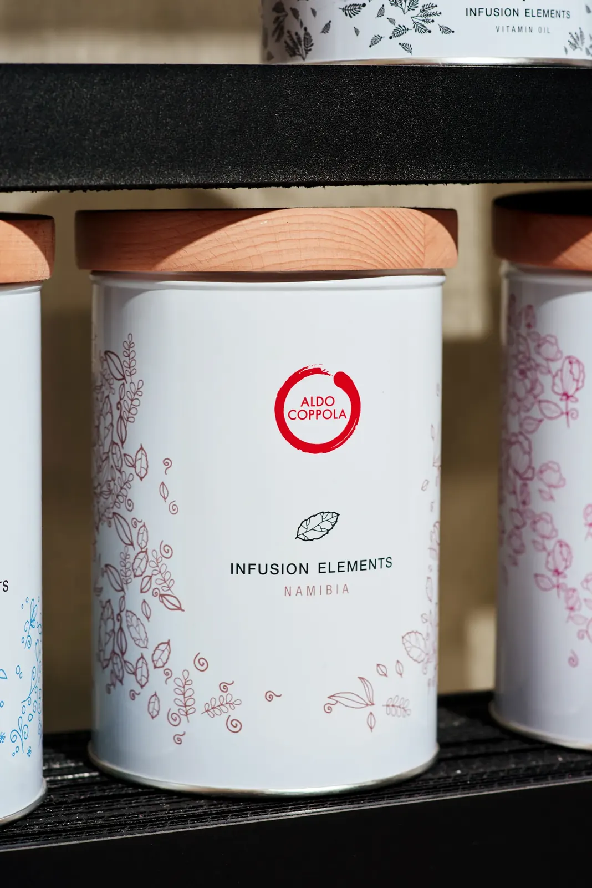
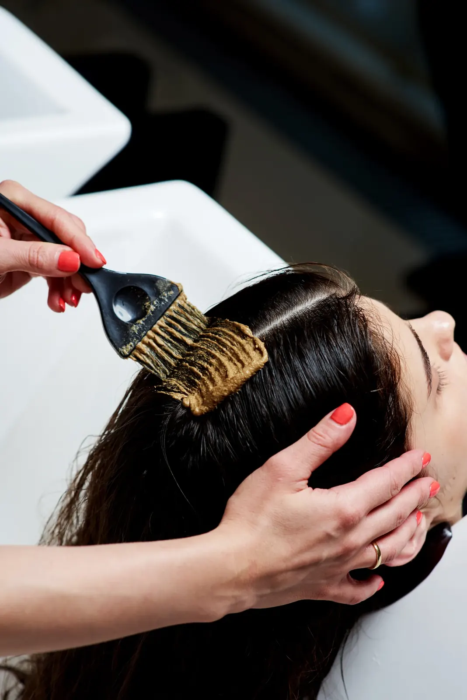
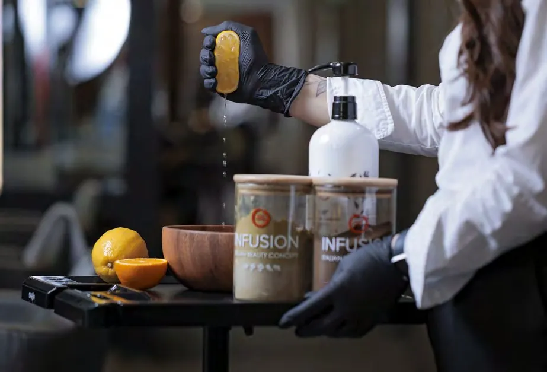

Infusion — авторская техника окрашивания Aldo Coppola. Вместо привычной крем-краски колорист работает с пудрами из измельчённых трав и растительных экстрактов. Формулы мягкие, без аммиака, а сама процедура одновременно даёт цвет и восстанавливает волосы.
Из чего состоит Infusion
В основе — пудры из измельчённых трав и растительных экстрактов, обогащённые активными компонентами. Колорист замешивает их с тёплой водой до консистенции густого крема и наносит на волосы. В описании системы Infusion Elements бренд называет основу пудры итальянских трав, пектин и витамин С.

Чем травяное окрашивание отличается от обычного
Обычная стойкая краска открывает кутикулу волоса и меняет пигмент внутри. Травяные пигменты в основном обволакивают волос снаружи. Поэтому Infusion бережнее к структуре, а волосы после процедуры ощущаются более плотными.
Обратная сторона: травы не умеют осветлять. Infusion работает в своём тоне или темнее, придаёт оттенок, глубину и блеск. Для осветления колорист выбирает другие техники, например шатуш.
Какие оттенки можно получить
Палитра — от блонда до тёмного шоколада. Пудры смешивают между собой, поэтому колорист может собрать индивидуальный оттенок и рефлекс: тёплый медный, холодный каштановый, глубокий шоколадный.

Закрашивает ли Infusion седину
Да, система подходит и для работы с сединой. Насколько плотным будет покрытие, зависит от количества седых волос и их структуры, поэтому колорист оценит это на консультации. Подробнее о вариантах — в материале о седине.
Как проходит процедура
- Консультация: колорист смотрит на волосы, обсуждает желаемый оттенок и подбирает смесь пудр.
- Замес: пудры смешивают с тёплой водой.
- Нанесение и выдержка. Время зависит от оттенка и волос.
- Смывание и уход из линии Infusion Elements.

Кому подходит
- Тем, кто хочет освежить или углубить свой цвет без аммиака.
- Тем, у кого волосы ослаблены и нужен цвет с уходом.
- Тем, кто хочет мягко закрасить седину.
Не подойдёт, если вы хотите заметно посветлеть: здесь нужны другие техники.
Вопросы и ответы
Сколько держится цвет после Infusion?
Цвет постепенно смывается и отрастает. Как часто обновлять, колорист скажет после первой процедуры: это зависит от волос и выбранного оттенка.
Можно ли делать Infusion после обычной краски?
Чаще всего да, но колорист должен знать, чем и когда вы красились, чтобы предсказать результат.
Infusion осветляет волосы?
Нет. Травяные пигменты работают в своём тоне или темнее.
Источники
- Презентация Aldo Coppola Russia: раздел «Авторские техники: натуральное окрашивание на травах Infusion»
- Описание профессиональной линии Infusion Elements, Aldo Coppola